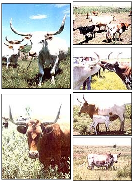

CLOCKWISE FROM ABOVE:The Texas longhorn is well named and comes in many colors .... Despite the fierce reputation of their semiwild ancestors, today's tamed cattle are often friendly . . . make good mothers . . . can exist on open rangeland . . . and will thrive in lush pastures, too.